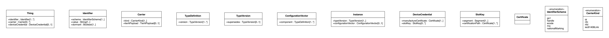
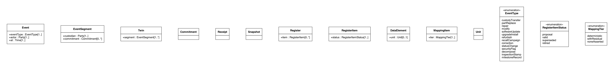
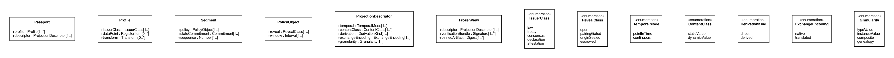
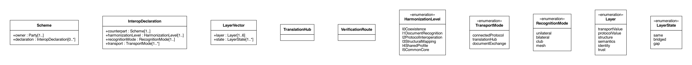

Structural models
Each model states its classes, attributes, enumerations and definitions, in LutaML, one file per concern. The diagrams are rendered from the same sources.
Identity and the identity lattice
models/identity.lutaml — 10 classes, 2 enumerations; view IdentityLattice

Classes
ThingIdentifierCarrierTypeDefinitionTypeVersionConfigurationVectorInstanceDeviceCredentialSlotKeyCertificate
Record and twin
models/record.lutaml — 6 classes, 1 enumerations; view RecordAndSemantics

Classes
EventEventSegmentTwinCommitmentReceiptSnapshot
Projection and the projection calculus
models/projection.lutaml — 6 classes, 7 enumerations; view ProjectionCalculus

Classes
PassportProfileSegmentPolicyObjectProjectionDescriptorFrozenView
Trust and the party model
models/trust.lutaml — 15 classes, 2 enumerations
Classes
PartyGovernmentRegulatorIntergovernmentalBodyAccreditationBodyCertificationBodyIndustryPolicyBodyVoluntarySchemeEconomicOperatorInfrastructureOperatorConsumerMachineTrustListMasterListSignatureSlotRevocationQuorum
Semantics and the registry
models/semantics.lutaml — 5 classes, 2 enumerations
Classes
RegisterRegisterItemDataElementMappingItemUnit
The scheme calculus
models/scheme.lutaml — 5 classes, 5 enumerations; view SchemeCalculus

Classes
SchemeInteropDeclarationLayerVectorTranslationHubVerificationRoute
The product algebra
models/algebra.lutaml — 11 classes, 3 enumerations
Classes
PassportLinkAssociationDerivationInstallationTypeLineageCustodyMembershipTransformationEventQuantityCarveOutMassBalanceProductness